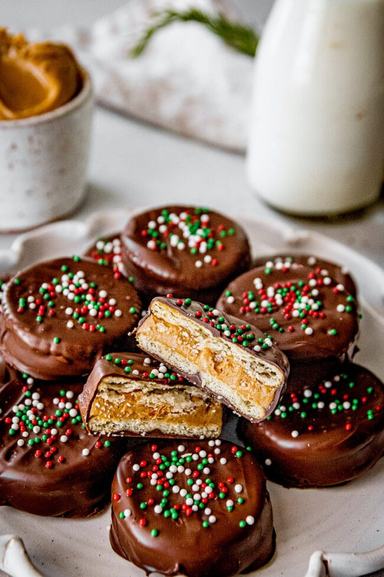

Ritz Crackers

These yummy Ritz cracker cookies have a peanut butter filling and are coated in melted chocolate.
Ingredients
- 1 (16 ounce) jar peanut butter
- 1 (16 ounce) package buttery round crackers
- 1 pound semisweet chocolate, chopped
Steps
-
Spread 1 teaspoon peanut butter on a cracker and top with another cracker.
-
Place chocolate in top of double boiler; stir frequently over medium heat until melted.
-
Place cracker sandwiches onto a fork and dip into the chocolate.
Drain excess chocolate and cool on waxed paper.
Store in refrigerator or cover and freeze until ready to serve.